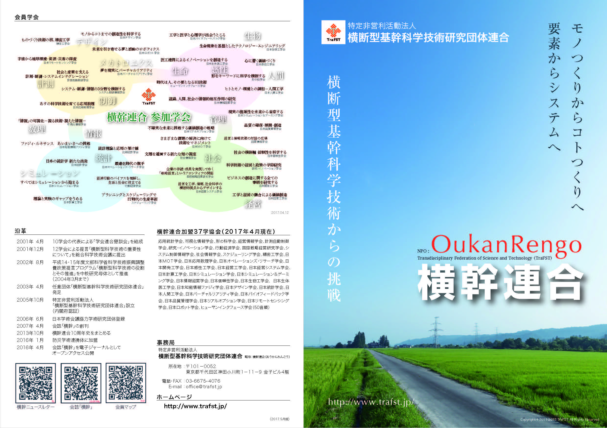
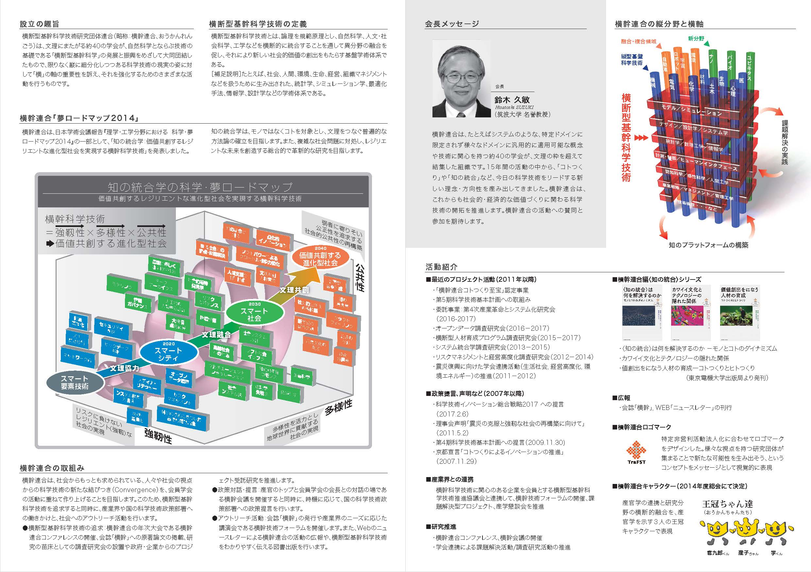
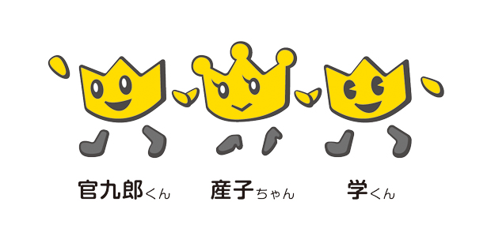
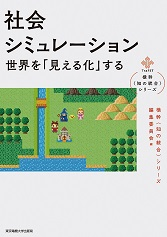

最新情報
■2018.3.30.更新NEW!
横幹連合の会誌「横幹」第12巻第1号が、電子ジャーナルとして発刊されました。
■2018.5.26.更新 NEW!
ニュースレターを更新、2018年5月号（No.53）を発行しました。
■2017.5.17.更新 NEW!
横幹連合パンフレット（2016・2017年度版、PDF7MB）を掲載しました。
下記イメージをクリックしてダウンロードして下さい。


■2018.5.18.更新 NEW!
会員学会カレンダーを更新しました。
■2017.2.18.更新
会員学会マップ
を更新しました。
■2018.4.8更新
第6回木村賞（2017年度）受賞者を掲載しました。
第7回木村賞は、本年度第9回横幹連合コンファレンスの論文が対象になります。
■2014.1.28.更新
「横幹連合10周年史」掲載しました。
ぜひご一読ください

お知らせ
●第9回横幹連合コンファレンスは、2018年10月6・7日、
電気通信大学（東京都調布市）にて開催されます。
講演論文登録と参加登録の受付を開始しました。詳細は、開催案内のページをご覧ください。
●コトつくり至宝発掘事業（試行版）候補推薦のお願い
推薦の締め切りを延長させていただきました。詳細は、推薦募集のページをご覧ください。
●会誌「横幹」12-1号が発行されました。
特集「Society5.0，超スマート社会に向けた新しい価値を創造
する各学会の取り組みと他分野との研究展望」
ミニ特集「ビジネスイノベーションが先導する第４次産業革命
の実現に向けた産・学・官の役割と課題」
電子ジャーナルとして J-STAGE、および、会誌のページ にてオープンアクセス公開をしています。
詳細は会誌のページの案内をご覧ください。
●11月7日に開催しました「システム・イノベーション」シンポジウムの報告を掲載いたしました。
詳細はこちらをご覧ください。
また、第4次産業革命とシステム化研究会の活動報告のページも併せてご覧ください。
●横幹連合編〈知の統合〉シリーズ・新刊を刊行しました。
（シリーズ第4弾が、東京電機大学出版局より発刊されました）。
|  IV. 「社会シミュレーション --世界を「見える化」する」 |
既刊 I. 「〈知の統合〉は何を解決するのかーモノとコトのダイナミズム」 II. 「カワイイ文化とテクノロジーの隠れた関係」 III. 「価値創出をになう人材の育成――コトつくりとヒトつくり」 |
■主催・共催イベント
●横幹連合による協賛・後援イベントは、案内のページをご覧ください。
■これまでに開催された横幹連合のイベントは、こちらを参照ください。
■横幹連合会員学会のイベント案内を会員学会カレンダーに掲載しています。
■これまでに開催された横幹技術協議会の 横幹技術フォーラムの一覧を掲載しています。